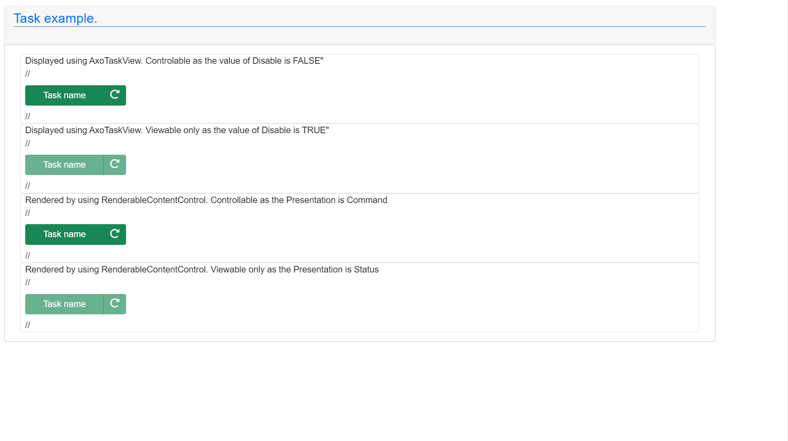

AxoTask
AxoTask provides basic task execution. AxoTask needs to be initialized to set the proper AxoContext.
AxoTask initialization within a AxoContext
{S7.extern=ReadWrite}
CLASS AxoTaskDocuExample EXTENDS AXOpen.Core.AxoContext
VAR PUBLIC
{#ix-set:AttributeName = "<#Task name#>"}
_myTask : AxoTask;
_myCounter : ULINT;
END_VAR
METHOD PUBLIC Initialize
// Initialization of the context needs to be called first
// It does not need to be called cyclically, just once
_myTask.Initialize(THIS);
END_METHOD
END_METHOD
There are two key methods for managing the AxoTask:
Invoke()fires the execution of the AxoTask (can be called fire&forget or cyclically)Execute()method must be called cyclically. The method returnsTRUEwhen the AxoTask is required to run until entersDonestate or terminates in error.
For termination of the execution of the AxoTask there are following methods:
DoneWhen(Done_Condition)- terminates the execution of the AxoTask and enters theDonestate when theDone_ConditionisTRUE.ThrowWhen(Error_Condition)- terminates the execution of the AxoTask and enters theErrorstate when theError_ConditionisTRUE.Abort()- terminates the execution of the AxoTask and enters theReadystate if the AxoTask is in theBusystate, otherwise does nothing.
To reset the AxoTask from any state in any moment there is following method:
Restore()acts as reset of the AxoTask (sets the state intoReadystate from any state of the AxoTask).
Moreover, there are seven more "event-like" methods that are called when a specific event occurs (see the chart below).
flowchart TD
classDef states fill:#80FF00,stroke:#0080FF,stroke-width:4px,color:#7F00FF,font-size:15px,font-weight:bold
classDef actions fill:#ff8000,stroke:#0080ff,stroke-width:4px,color:#7F00FF,font-size:15px,font-weight:bold
classDef events fill:#80FF00,stroke:#0080ff,stroke-width:4px,color:#7F00FF,font-size:15px,font-weight:bold
s1((Ready)):::states
s2((Kicking)):::states
s3((Busy)):::states
s4((Done)):::states
s5((Error)):::states
s6((Aborted)):::states
a1("Invoke()#128258;"):::actions
a2("Execute()#128260;"):::actions
a3("DoneWhen(TRUE)#128258;"):::actions
a4("ThrowWhen(TRUE)#128258;"):::actions
a5("NOT Invoke() call for at<br>least two Context cycles#128260;"):::actions
a6("Restore()#128258;"):::actions
a7("Abort()#128258;"):::actions
a8("Resume()#128258;"):::actions
e1{{"OnStart()#128258;"}}:::events
e2{{"OnError()#128258;"}}:::events
e3{{"WhileError()#128260;"}}:::events
e4{{"OnDone()#128258;"}}:::events
e5{{"OnAbort()#128258;"}}:::events
e6{{"OnRestore()#128258;"}}:::events
subgraph legend[" "]
direction LR
s((State)):::states
ac("Action #128260;:called<br>cyclically"):::actions
as("Action #128258;:single<br>or cyclical call "):::actions
ec{{"Event #128260;:called<br>cyclically"}}:::events
es{{"Event #128258;:triggered<br>once "}}:::events
end
subgraph chart[" "]
direction TB
s1
s1-->a1
a1-->s2
s2-->a2
s3-->a3
s3-->a7
a7-->e5
a7-->s6
s6-->a8
a8-->s3
a3-->s4
s4---->a5
a5-->a1
a2--->s3
s3--->a4
a4-->s5
s5-->a6
a6-->e6
a2-->e1
a4-->e2
a4-->e3
a3-->e4
a6-->s1
end
Example of using AxoTask:
{S7.extern=ReadWrite}
CLASS AxoTaskDocuExample EXTENDS AXOpen.Core.AxoContext
VAR PUBLIC
{#ix-set:AttributeName = "<#Task name#>"}
_myTask : AxoTask;
_myCounter : ULINT;
END_VAR
METHOD PUBLIC Initialize
// Initialization of the context needs to be called first
// It does not need to be called cyclically, just once
_myTask.Initialize(THIS);
END_METHOD
METHOD PROTECTED OVERRIDE Main
_myTask.Initialize(THIS);
// Cyclicall call of the Execute
IF _myTask.Execute() THEN
_myCounter := _myCounter + ULINT#1;
_myTask.DoneWhen(_myCounter = ULINT#100);
END_IF;
IF _myTask.IsDone() THEN
_myCounter := ULINT#0;
END_IF;
END_METHOD
The AxoTask executes upon the Invoke method call. Invoke fires the execution of Execute logic upon the first call, and it does not need cyclical calling.
_myTask.Invoke();
Invoke() method returns IAxoTaskState with the following members:
IsBusyindicates the execution started and is running.IsDoneindicates the execution completed with success.HasErrorindicates the execution terminated with a failure.IsAbortedindicates that the execution of the AxoTask has been aborted. It should continue by calling the methodResume().
Examples of using: Invoking the AxoTask and waiting for its completion at the same place.
IF _myTask.Invoke().IsDone() THEN
; //Do something
END_IF;
Invoking the AxoTask and waiting for its completion at the different places.
_myTask.Invoke();
IF _myTask.IsDone() THEN
; //Do something
END_IF;
Checking if the AxoTask is executing.
IF _myTask.Invoke().IsBusy() THEN
; //Do something
END_IF;
Check for the AxoTask's error state.
IF _myTask.Invoke().HasError() THEN
; //Do something
END_IF;
The AxoTask can be started only from the Ready state by calling the Invoke() method in the same Context cycle as the Execute() method is called, regardless the order of the methods calls. After AxoTask completion, the state of the AxoTask will remain in Done, unless:
1.) AxoTask's Restore method is called (AxoTask changes it's state to Ready state).
2.) Invoke method is not called for two or more consecutive cycles of its context (that usually means the same as PLC cycle); successive call of Invoke will switch the task into the Ready state and immediately into the Kicking state.
The AxoTask may finish also in an Error state. In that case, the only possibility to get out of Error state is by calling the Restore() method.
To implement any of the already mentioned "event-like" methods the new class that extends from the AxoTask needs to be created. The required method with PROTECTED OVERRIDE access modifier needs to be created as well, and the custom logic needs to be placed in.
These methods are:
OnAbort()- executes once when the task is aborted.OnResume()- executes once when the task is resumed.OnDone()- executes once when the task reaches theDonestate.OnError()- executes once when the task reaches theErrorstate.OnRestore()- executes once when the task is restored.OnStart()- executes once when the task starts (at the moment of transition from theKickingstate into theBusystate).WhileError()- executes repeatedly while the task is inErrorstate (andExecute()method is called).
Example of implementing "event-like" methods:
{S7.extern=ReadWrite}
CLASS MyTaskExample EXTENDS AXOpen.Core.AxoTask
VAR
OnAbortCounter : ULINT;
OnResumeCounter : ULINT;
OnDoneCounter : ULINT;
OnErrorCounter : ULINT;
OnRestoreCounter : ULINT;
OnStartCounter : ULINT;
WhileErrorCounter : ULINT;
END_VAR
METHOD PROTECTED OVERRIDE OnAbort
OnAbortCounter := OnAbortCounter + ULINT#1;
END_METHOD
METHOD PROTECTED OVERRIDE OnResume
OnResumeCounter := OnResumeCounter + ULINT#1;
END_METHOD
METHOD PROTECTED OVERRIDE OnDone
OnDoneCounter := OnDoneCounter + ULINT#1;
END_METHOD
METHOD PROTECTED OVERRIDE OnError
OnErrorCounter := OnErrorCounter + ULINT#1;
END_METHOD
METHOD PROTECTED OVERRIDE OnRestore
OnRestoreCounter := OnRestoreCounter + ULINT#1;
END_METHOD
METHOD PROTECTED OVERRIDE OnStart
OnStartCounter := OnStartCounter + ULINT#1;
END_METHOD
METHOD PROTECTED OVERRIDE WhileError
WhileErrorCounter := WhileErrorCounter + ULINT#1;
END_METHOD
END_CLASS
How to visualize AxoTask
On the UI side there are several possibilities how to visualize the AxoTask.
You use the AxoTaskView and set its Component according the placement of the instance of the AxoTask.
Based on the value of Disable the control element could be controllable:
<AxoTaskView Component="@Entry.Plc.AxoTaskDocu._myTask" Disable="false" />
or display only:
<AxoTaskView Component="@Entry.Plc.AxoTaskDocu._myTask" Disable="true" />
The next possibility is to use the RenderableContentControl and set its Context according the placement of the instance of the AxoTask.
Again as before the element could be controlable when the value of the Presentation is Command:
<RenderableContentControl Context="@Entry.Plc.AxoTaskDocu._myTask" Presentation="Command" />
or display only when the value of the Presentation is Status
<RenderableContentControl Context="@Entry.Plc.AxoTaskDocu._myTask" Presentation="Status"/>
The displayed result should looks like:
